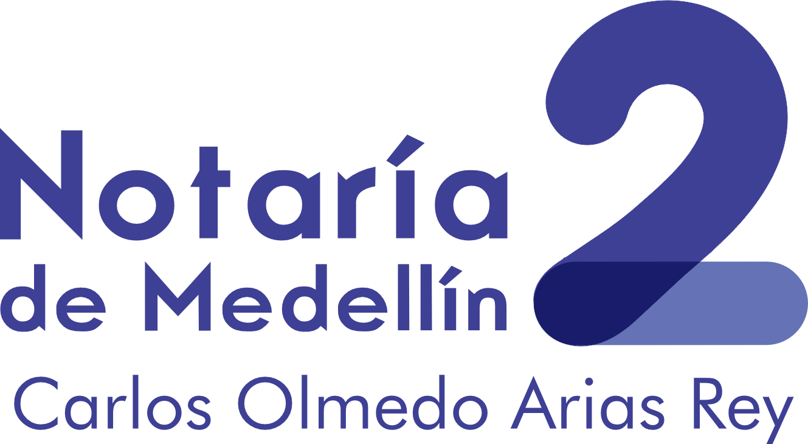

En la Notaría Segunda de Medellín ofrecemos servicios de autenticación que garantizan la validez legal de documentos y firmas, brindando confianza y respaldo jurídico a cada trámite.
Validación de firmas en documentos privados.
Certificación de contenido y firma.
Verificación de copias frente a originales.
Comparecencia ante notario.
Es el acto mediante el cual el notario certifica que una firma fue puesta por la persona que dice ser su autor, previa verificación de identidad.